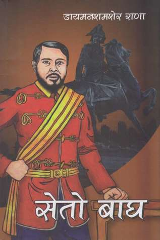

<!DOCTYPE html>
<html lang="en">
<head>
    <meta charset="UTF-8">
    <meta name="viewport" content="width=device-width, initial-scale=1.0">
 <title>Seto Bagh</title>
    <style>
        body {
            background-color: mediumaquamarine;
            font-family: Arial, sans-serif;
        }
        .header {
            font-size: 24px;
            font-weight: bold;
            text-align: center;
            padding: 20px;
        }
        .subheader {
            font-size: 18px;
            text-align: center;
            padding: 10px;
        }
        .main-content {
            max-width: 800px;
            margin: 0 auto;
            padding: 20px;
            color: white;    
    </style>
</head>
<body>
</html>
    </style>
</head>
<body>
    <div class="header">Seto Bagh</div>
<center>
    <div class="subheader">Diamond Sumsher rana</div>

    <div class="main-content">
 <center>
        <!-- Your article content goes here -->
        <div class="header">अध्याय १: शक्तिको छाया</div>
काठमाडौंको मुटुमा, राणा परिवारको भव्य दरबार उनीहरूको शक्तिको प्रमाण थियो। नेपालका प्रधानमन्त्रीका रूपमा ख्याति प्राप्त जङ्गबहादुर राणाले आफ्नो परिवारको शासनलाई देशमा सुदृढ बनाएका थिए। तर, ठूलो शक्तिसँगै ठूलो महत्वाकांक्षा पनि आउँछ, र दरबार षड्यन्त्रको कचौरो थियो।

जङ्गबहादुरको जेठो छोरा, जगतजङ्ग राणा, महत्वाकांक्षी मानिस थिए। उनले आफ्ना बुबाको छायाँमा हुर्किँदै, एक दिन उस्तै शक्ति सम्हाल्ने दृढ सङ्कल्प गरेका थिए। तर, सिंहासनतर्फको बाटो जोखिम र धोखाधडीले भरिएको थियो।</p>

         <div class="header">अध्याय २: बाघको उत्तराधिकारी</div>
जगतजङ्ग मात्र शक्ति प्राप्त गर्ने दाबेदार थिएनन्। उनका दाजुभाइ र काका, आ-आफ्ना आकांक्षासहित, उनका हरेक चाललाई हेरिरहेका थिए। राणा परिवार सर्पको गुँड थियो, र विश्वास दुर्लभ वस्तु थियो।

एक साँझ, जगतजङ्गले आफ्नो सबैभन्दा नजिकको सहयोगी, आफ्ना कान्छा भाइसँग आफ्ना रहस्यहरू साटे। "हामीले हाम्रो भविष्य सुरक्षित गर्नुपर्छ," जगतजङ्ग फुसफुसाए। "बुबाको मृत्युले हामीलाई अराजकतामा फ्याँक्नेछ। हामी तयार हुनुपर्छ।"</p>
      <div class="header">अध्याय ३: प्रेम र धोखा</div>
राजनीतिक षड्यन्त्रका बीच, अनपेक्षित ठाउँमा प्रेम अंकुरियो। जगतजङ्गले एक सुन्दरी र बौद्धिक युवतीको साथमा शान्ति भेटे। उनीहरूको गोप्य भेटघाटले उनलाई शक्ति प्राप्त गर्ने निरन्तर प्रयासबाट छोटो समयको राहत प्रदान गर्‍यो।

तर राणा दरबारमा प्रेम खतरनाक कुरा थियो। ईर्ष्या र विश्वासघात हरेक कुना-काप्चामा लुकेको थियो। जगतजङ्गको प्रेमको अफवाह उनका प्रतिद्वन्द्वीको कानमा पुग्यो, जसले यसलाई उनलाई कमजोर बनाउनको लागि अवसरको रूपमा देखे।</p>
       <div class="header">अध्याय ४: पतन</div>
जङ्गबहादुरको मृत्यु आकस्मिक र क्रूर थियो, दरबारलाई अराजकतामा फ्याँक्दै। जगतजङ्ग छिटो हल्लिए, आफ्ना समर्थकहरूलाई भेला गर्दै र आफ्नो शक्ति सुदृढ गर्दै। यद्यपि, उनका प्रतिद्वन्द्वीहरू पनि उत्तिकै चाँडो थिए, उनको पतनको योजना बनाउँदै।

उच्चतम् भिडन्तमा, जगतजङ्गले आफ्ना दाजुभाइ र काकाहरूसँग दरबारको भव्य हलमा सामना गरे। आरोपहरू उडाए, र गठबन्धनहरू टुटे। एकताबद्ध परिवार अब विभाजित थियो, प्रत्येक गुटले नियन्त्रणको लागि संघर्ष गरिरहेको थियो।</p>
        <div class="header">अध्याय ५: सेतो बाघको गर्जन</div>
जब द्वन्द्व उच्च बिन्दुमा पुग्यो, जगतजङ्गले शक्तिको लागि निराश प्रयास गरे। उनले आफ्ना बुबाको विरासतको नाममा आफूलाई उचित उत्तराधिकारी घोषित गरे। तर उनको घोषणा तीव्र प्रतिरोधले सामना गर्‍यो।

अन्तिम, दुःखद मोडमा, जगतजङ्गलाई सबैभन्दा नजिकका मानिसहरूले धोका दिए। उनको कान्छो भाइ, शक्ति प्राप्तिको वाचा गरिएको, उनको विरुद्ध उभियो। दरबार, एक पटक शक्तिको प्रतीक, युद्धभूमि बन्यो।</p>
        <div class="header">अध्याय ६: खरानीको विरासत</div>
जगतजङ्गको पतनले राणा वंशको अन्तको सुरुवात गरे। परिवारको आन्तरिक संघर्षले उनीहरूको शक्ति कमजोर पार्‍यो, परिवर्तनको बाटो खुल्दै। लामो समयदेखि दबिएकाब नेपाली जनता हल्लिन थाले।

केही वर्ष पछि, दरबार भग्नावशेषमा परिणत भयो, असङ्कलित महत्वाकांक्षाको प्रमाण। राणा परिवारको विरासत शक्ति र विश्वासघातको थियो, तर परिवर्तन र नवीकरणको पनि। एक पटक शक्तिको प्रतीक, सेतो बाघको कथा पुस्तौंपुस्ताका लागि चेतावनीपूर्ण कथा बन्यो।</p>
       <div class="header">उपसंहार: नयाँ बिहान</div>
नेपाल राणाहरूको छायाबाट निस्कियो, आशा र सम्भावनाको नयाँ युगलाई अँगाल्दै। विगतका पाठहरूले भविष्यलाई आकार दिए, मानिसहरू लोकतन्त्र र न्यायतर्फको बाटो फोर्दै।

"सेतो बाघ" शक्ति र राष्ट्रको स्थायी आत्माको खतरा र कथा सम्झाउने महत्त्वपूर्ण कथा बनेको छ।</p>
    </div>
    <!DOCTYPE html>
<html lang="en">
<head>
    <meta charset="UTF-8">
    <meta name="viewport" content="width=device-width, initial-scale=1.0">
 <center>
    <style>
        /* Style for the button */
        .my-button {
            background-color: #0074D9;
            color: #FFFFFF;
            border: none;
            padding: 10px 60px;
            font-size: 20px;
            border-radius: 5px;
            cursor: pointer;
        }

        /* Optional hover effect */
        .my-button:hover {
            background-color: #197B7F;
        }
    </style>
</body>
</html>

